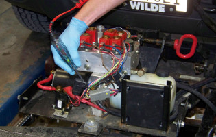
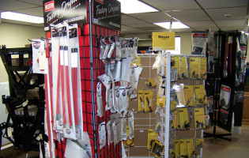

Services
Here at MacArthur Equipment all your needs are handled by experienced and trained technicians. Come in early before the first snowfall to avoid the rush. It’s always better to be prepared ahead of time than find out your equipment doesn't work when you need it most. These services include:

Flush & Fill
Just like with your vehicle, it is necessary to have an annual flush and fill on plows. This process eliminates freeze-ups and improves hydraulic performance. We make a complete inspection of your plow’s system to ensure that all your parts are working properly. We inspect lines, drain the hydraulic fluid, remove water and hydraulic sedimentation (caused from the breakdown of hydraulic fluids and hoses), and inspect the solenoid and cables. We then re-fill the plow with brand specific high-quality hydraulic fluid.

General Maintenance
We can replace broken pumps or fix electrical and hydraulic problems to ready you for the winter. We can also repair any broken welds on the plow.
If your plow is getting rusty or needs some structural repair, you can bring it in during the off-season to get it blasted, painted and repaired as necessary.

Upgrades and Parts
If you need to upgrade your snow plow or salt spreader, turn to MacArthur Equipment, LLC. We will discuss your needs and recommend the proper equipment for you. From moldboards to wireless controllers, we've got the plows and accessories to keep your buisness going all winter long. Come visit our parts department to learn more.